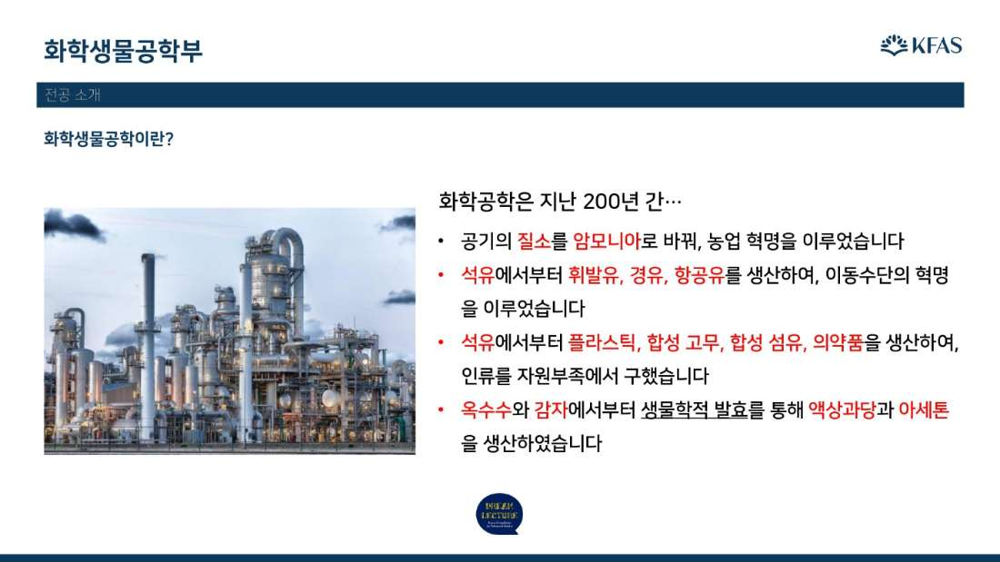

DREAM LECTURE / 04
드림 커넥트
“화면 너머, 더 가까이!”
한국고등교육재단 장학생이 직접 들려주는 전공·진로 탐색 세미나입니다. 대학에서 무엇을 배우고 어떻게 그 길을 골랐는지, 가장 가까운 선배에게 직접 묻는 1시간.
월 1회
다양한 전공
온라인
2025년
첫 개최
전국
고등학생 누구나
2인
이공계 + 인문사회 멘토
1시간
세미나 진행
ABOUT THE PROGRAM
가장 가까운 선배가
가장 가까운 선배가
들려주는 이야기
“드림 커넥트”는 현재 대학에 재학 중인 한국고등교육재단 장학생이 자신의 전공과 진로 선택 과정을 직접 들려주는 온라인 세미나입니다. 강의를 듣는 자리가 아니라, 같은 고민을 먼저 지나온 선배에게 묻는 자리입니다.
이공계와 인문사회 멘토가 함께 참여해 서로 다른 길을 보여주고, 질문 시간을 통해 학생들이 자신의 관심을 구체적인 진로로 옮겨 보도록 돕습니다. 전국의 고등학생 누구나 신청해 참여할 수 있습니다.
OVERVIEW
프로그램 개요
방식
온라인 실시간 화상 세미나
대상
전국 모든 고등학생
일정
학기 중 월 1회 · 상반기 4~6월, 하반기 9~11월
멘토
다양한 분야의 멘토, 재단 장학생
참가비
없음
이런 점이 다릅니다
교수가 아니라 대학생 선배가 이야기합니다. 몇 년 전 같은 입시를 치른 재단 장학생이 직접 전공을 소개합니다.
매 회 이공계와 인문사회 전공을 함께 다룹니다. 두 분야를 한자리에서 비교해 볼 수 있습니다.
전체 시간의 3분의 1을 질의응답에 씁니다. 입시부터 공부 방법, 대학 생활까지 직접 물을 수 있습니다.
온라인으로 진행되어 지역과 상관없이 참여할 수 있습니다.
일회성 강연이 아닙니다. 거점특강·방문특강에서 시작된 관심을 이어 가는 사후 프로그램입니다.
하반기 세미나 신청하기 →
※ 신청 링크는 각 세미나 2주 전 드림렉쳐 채널을 통해 공지됩니다
2026 SCHEDULE
세미나 일정
상반기 3회, 하반기 3회로 연간 총 6회 운영됩니다. 매 회 신청 가능한 주제와 전공이 공개됩니다.
{{ s.month }}
{{ s.day }}
{{ s.status }}
이공계
{{ s.science }}
인문사회
{{ s.humanities }}
SESSION STRUCTURE
1시간, 이렇게 진행됩니다
멘토 소개부터 깊이 있는 Q&A까지, 알차게 구성된 1시간 세미나 흐름입니다.
{{ s.no }}
{{ s.title }}
{{ s.text }}
MATERIALS
세미나 발표자료

드림 커넥트 온라인 진로 세미나 · 지식나눔팀
전화 02-6310-7876 · dreamlecture@kfas.or.kr